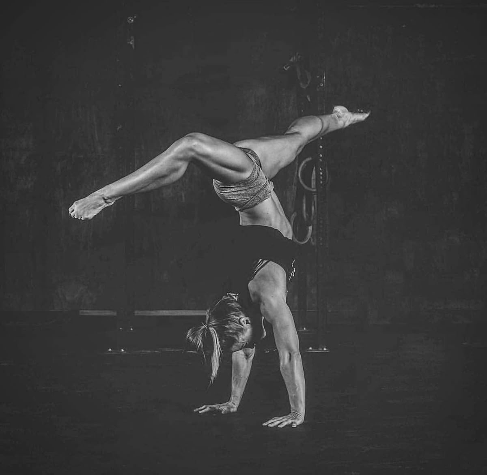

Calisthenics is a form of training that is often done with no equipment. It uses the resistance of your own body weight and focuses on building strength, endurance and flexibilty.
Calisthenics
What can our gym help you with?
Our gym is not only for those whonare able to workout at our gym but it is for those who can also do so at home.This female impowerment gym is for moms who don't have much time to go to the gym, those who are not yet confident enough and those who just love their own space and privacy.
We have a large variety of exercises that can be done with or without equipemt raging from a simple handstand to channeling your core strength through the baki pose. Calisthenics has never felt more liberating and impowering as it has with this course.
Our programme takes into consideration the age, metabolism and individual anatomy of each woman. It allows you mom to regain their core strength. With woman supporting each other at each step of the way, this is the future of calisthenics for woman.
Programs and classes are typically tailored to women’s fitness goals, such as toning, strength training, and pre- or postnatal health, with trainers who understand female physiology.